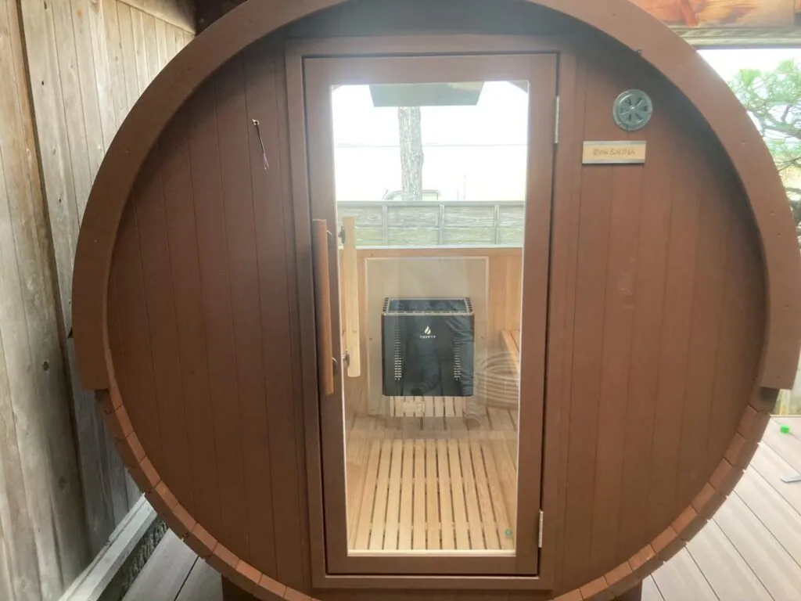
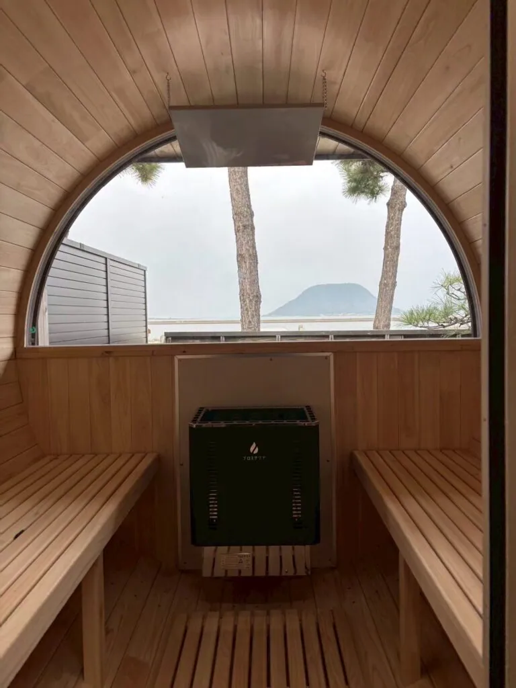
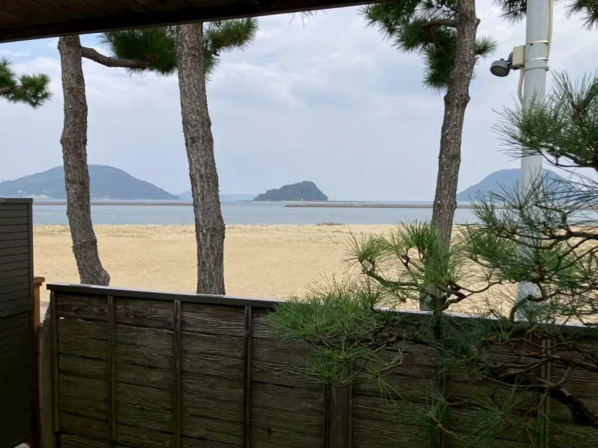

「サウナ良かったよ」「海が見えるサウナ良かったよ」と、お客様から嬉しいお声をいただいています。
そう語ってくださったのは、佐賀県の大政旅館でサウナの導入を担当された江口様です。
昨今のサウナブームに加え、江口様ご自身がサウナを愛好されていたことから、宿泊客に楽しんでいただける新たなアクティビティとして、サウナの導入を進められました。
大政旅館様では、すでに他社製のサウナを1台導入されていました。そのうえで、滞在の魅力をさらに高めるために2台目の導入を計画し、Rink SAUNAをお選びいただきました。
本記事では、2台目のサウナとしてRink SAUNAを選ばれた理由と、海辺という特別な環境でバレルサウナが生み出している滞在価値についてご紹介します。
| 導入施設 | 大政旅館様 |
|---|---|
| 設置場所 | 佐賀県 |
| 導入モデル | i-barrel Small R15 |
| 仕様 | パノラマ窓 |
| 主な利用層 | 40〜50代の宿泊客 |
| お話を伺った方 | 江口様 |
なぜバレルサウナだったのか？
宿泊客に楽しんでもらえる新たな体験
サウナブームが盛り上がりを見せる中、大政旅館様でも、宿泊客に喜ばれる新しいコンテンツとしてサウナの導入を検討されていました。
江口様ご自身が日頃からサウナを愛好されていたことも、施設への導入を後押しするきっかけになったそうです。
2台目のサウナを改めて比較検討
大政旅館様では、すでに他社製のサウナを1台導入されていました。
さらに滞在の魅力を高めるために2台目の導入を計画し、1台目と同じメーカーに限定せず、複数のメーカーを改めて比較検討されました。
製品そのものの品質だけでなく、導入後も安心して使用し続けられるかという視点から、メーカーの信頼性やサポート体制も含めて検討されたそうです。
Rink SAUNAを選ばれた決め手
選定時に重視された3つのポイント
- メーカーとしての信頼性
- 純国産ヒノキを使用した製品の品質
- 海を眺められるパノラマ窓
会社としての信頼性
数あるサウナメーカーの中からRink SAUNAを選ばれた理由の一つは、メーカーとしての信頼性でした。
「いろいろなメーカーを見て、会社としてしっかりしているなと感じました。信頼性はもちろんですが、サウナ自体の質もすごく良いという評判を聞いていたことが大きかったですね」
宿泊施設で長く使用する設備だからこそ、製品の品質だけでなく、導入後も安心して相談できるメーカーであることが重要な判断材料となりました。
純国産ヒノキによる上質な空間
導入されたモデルは、2〜4名での利用に適した「i-barrel Small R15」です。
サウナ室内には純国産ヒノキを使用しており、ヒノキ特有の香りと美しい木目が、宿泊施設にふさわしい落ち着いた空間をつくります。
自然素材ならではの質感が旅館の景観にもなじみ、海辺で過ごす非日常の時間をより印象的なものにしています。
海を望むパノラマ窓
旅館の目の前に広がる海という立地を活かすため、背面に大きなガラスを備えたパノラマ窓仕様を選ばれました。
サウナ室内から海の景色を眺められることで、単に汗を流すだけではなく、その場所ならではの体験を提供できます。
純国産ヒノキの香りと、海を切り取るパノラマ窓の組み合わせが、Rink SAUNAを選ぶ大きな決め手となりました。

導入後の変化
導入後に生まれた変化
- ほぼ毎日稼働する人気設備に
- 40〜50代の宿泊客を中心に利用
- 海を眺めながら過ごせる滞在体験を提供
ほぼ毎日稼働する人気設備に
Rink SAUNAの導入後、バレルサウナはほぼ毎日稼働しているというほど、宿泊客から高い支持を集めています。
主な利用者は40〜50代の男女で、大政旅館様の落ち着いた客層ともよく合っています。
チェックイン後や朝の空き時間に、海を眺めながらゆっくりと汗を流す過ごし方が、旅館での新たな楽しみ方として定着しつつあります。
お客様から好評の海の景色
特に好評なのが、パノラマ窓から見える海の景色です。
「『サウナ良かったよ』『海が見えるサウナ良かったよ』というお声をたくさんいただきます。サウナの中から、海でSUP（サップ）をされている方の姿が見えることもあり、景色が本当に素晴らしいんです」
サウナの中から海を眺められることが、大政旅館様ならではの魅力として、お客様の印象に残っています。
海辺の景観を活かした滞在体験
バレルサウナは、単に汗をかくための設備ではなく、海辺の景観と一体になった体験を楽しめる場所として活用されています。
海の広がりを感じながら、純国産ヒノキの香りに包まれて過ごす時間は、日常から離れて心身をリラックスさせる特別な体験です。
景観とサウナの魅力を組み合わせることで、旅館で過ごす時間そのものの価値を高めることにつながっています。

まとめ
大政旅館様では、海を望める立地を活かすため、パノラマ窓を備えたRink SAUNAのバレルサウナを導入されました。
他社製のサウナを導入した経験を踏まえ、2台目のサウナには、メーカーとしての信頼性、純国産ヒノキの品質、海を眺められるパノラマ窓を重視してRink SAUNAをお選びいただきました。
導入後はほぼ毎日稼働し、40〜50代の宿泊客を中心に好評を得ています。
その土地ならではの景観とサウナを組み合わせることで、施設独自の体験を生み出し、宿泊客の満足度や滞在価値を高められることが分かる事例となりました。